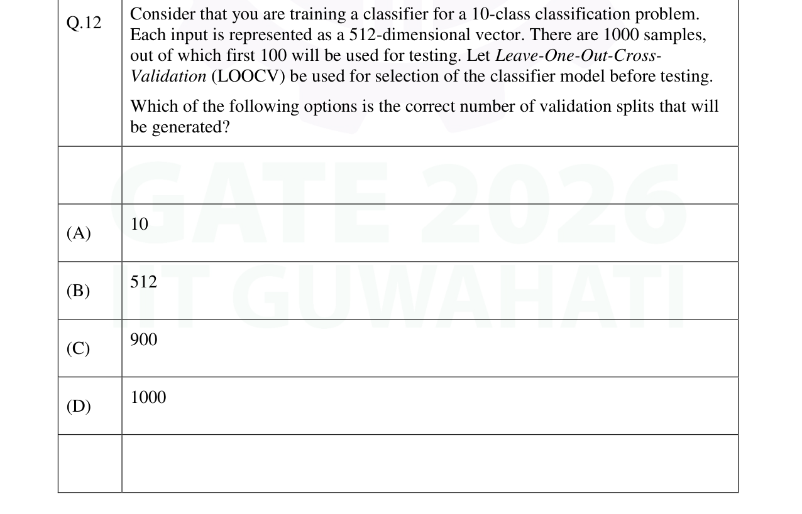
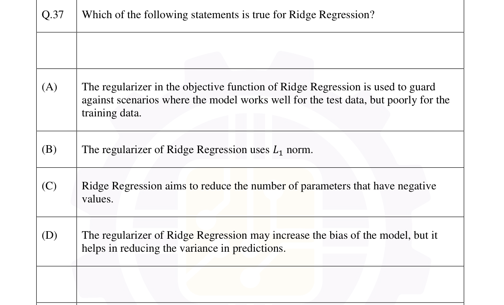
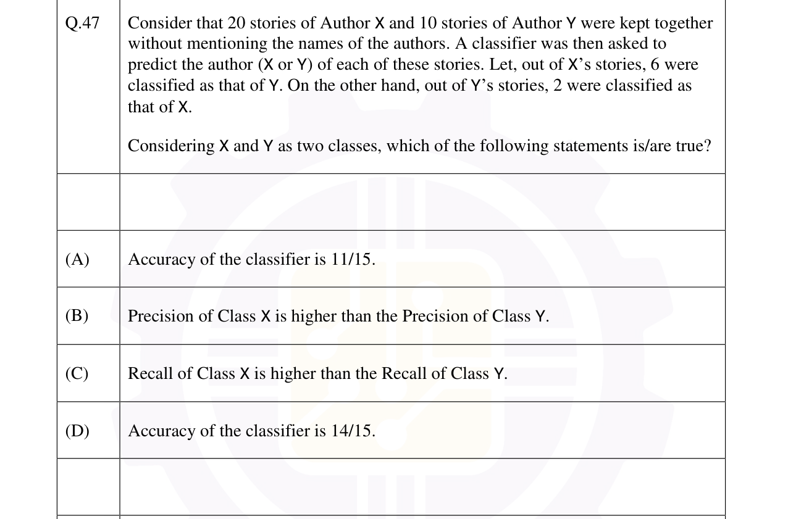
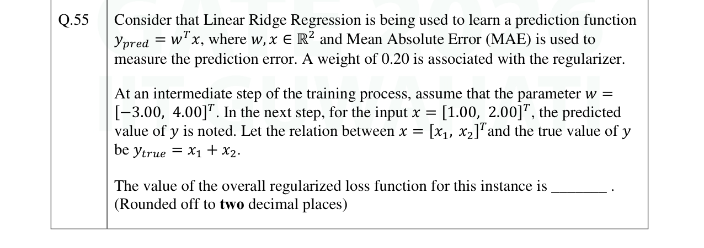

Real GATE DA 2024, 2025 & 2026 questions from the Machine Learning part of our syllabus, tagged by year. Attempt each (MCQ, MSQ or numerical) and check the official answer.
GATE DA 2026Cross-validation (LOOCV)MCQ1 mark

Single correct (MCQ).
GATE DA 2026Ridge regressionMCQ2 marks

Single correct (MCQ).
GATE DA 2026Classification metricsMSQ2 marks

Multiple correct (MSQ) — select all that apply.
GATE DA 2026Ridge regressionNAT2 marks

Numerical answer (NAT) — type a value and press Check.
GATE DA 2025Least-squares regressionNAT1 mark
Q34. Given data $\{(-1,1),(2,-5),(3,5)\}$, fit $y=wx$ by linear least squares. The optimal $w$ is ______ (3 dp).
Numerical answer (NAT) — type a value and press Check.
GATE DA 2025Distance-based classificationMSQ2 marks
Q55. A two-class problem in $\mathbb{R}^d$ has class means $\mu_{red},\mu_{green}$. A test point $x$ is labelled by the nearer mean using squared Euclidean distance: $f(x)=\lVert\mu_{red}-x\rVert^2-\lVert\mu_{green}-x\rVert^2$, assigning red if $f(x)<0$ and green otherwise. Which is/are correct?
Multiple correct (MSQ) — select all that apply.
Expanding, the $\lVert x\rVert^2$ terms cancel: $f(x)=\lVert\mu_{red}\rVert^2-\lVert\mu_{green}\rVert^2-2(\mu_{red}-\mu_{green})^{\mathsf T}x$ — linear in $x$ (B, C); not quadratic (D). At $x=0$, $f(0)=\lVert\mu_{red}\rVert^2-\lVert\mu_{green}\rVert^2<0$ when $\lVert\mu_{red}\rVert<\lVert\mu_{green}\rVert$, so $x=0$ is labelled red, not green (A false).
GATE DA 2024k-means clusteringMCQ1 mark
Q19. Euclidean-distance $k$-means with $k=3$ is run on 100 points. If $\begin{bmatrix}1\\1\end{bmatrix}$ and $\begin{bmatrix}-1\\1\end{bmatrix}$ are both in cluster 3, which ONE point is necessarily also in cluster 3?
Single correct (MCQ).
A $k$-means cluster region is convex, so the midpoint $\begin{bmatrix}0\\1\end{bmatrix}$ of two points in cluster 3 must also lie in cluster 3.
GATE DA 2024Logistic regression (sigmoid)NAT1 mark
Q33. Let $f(x)=\dfrac{1}{1+e^{-x}}$. The value of $f'(x)$ at the point where $f(x)=0.4$ is ______ (2 dp).
Numerical answer (NAT) — type a value and press Check.
For the sigmoid, $f'(x)=f(x)\big(1-f(x)\big)=0.4\times0.6=0.24$.
GATE DA 2024Linear separabilityMSQ2 marks
Multiple correct (MSQ) — select all that apply.
GATE DA 2024k-Nearest NeighboursNAT2 marks
Numerical answer (NAT) — type a value and press Check.